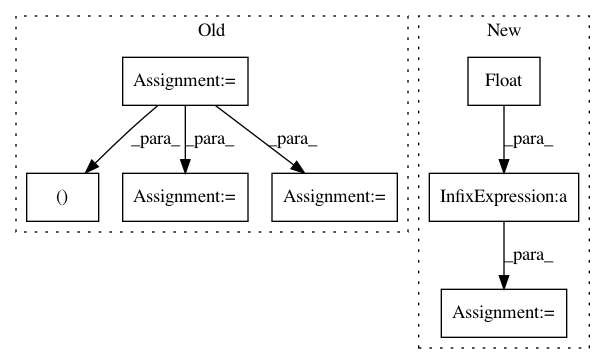

a0c07598ea76cb51a14f329885f0798841be4781,tslearn/metrics.py,,itakura_mask,#Any#Any#Any#,412
Before Change
[ inf, inf, inf, inf, inf, 0.]])
sz1, sz2, max_slope = float(sz1), float(sz2), float(max_slope)
min_slope = 1 / max_slope
max_slope *= (sz1 / sz2)
min_slope *= (sz1 / sz2)
lower_bound = numpy.empty((2, sz2))
lower_bound[0] = min_slope * numpy.arange(sz2)
lower_bound[1] = ((sz1 - 1) - max_slope * (sz2 - 1)
After Change
min_slope = 1 / float(max_slope)
max_slope *= (float(sz1) / float(sz2))
min_slope *= (float(sz1) / float(sz2))
lower_bound = numpy.empty((2, sz2))
lower_bound[0] = min_slope * numpy.arange(sz2)
lower_bound[1] = ((sz1 - 1) - max_slope * (sz2 - 1)
In pattern: SUPERPATTERN
Frequency: 3
Non-data size: 7
Instances
Project Name: rtavenar/tslearn
Commit Name: a0c07598ea76cb51a14f329885f0798841be4781
Time: 2019-05-29
Author: johann.faouzi@icm-institute.org
File Name: tslearn/metrics.py
Class Name:
Method Name: itakura_mask
Project Name: danforthcenter/plantcv
Commit Name: 3c8df2fc218bd42544ac0eebb8dbfc6724c27a14
Time: 2019-06-06
Author: noahfahlgren@gmail.com
File Name: plantcv/plantcv/analyze_nir_intensity.py
Class Name:
Method Name: analyze_nir_intensity
Project Name: CSAILVision/semantic-segmentation-pytorch
Commit Name: 6324799d51a451995a91b76306eae40ccd11f55e
Time: 2018-03-27
Author: jasonhsiao97@gmail.com
File Name: utils.py
Class Name:
Method Name: accuracy